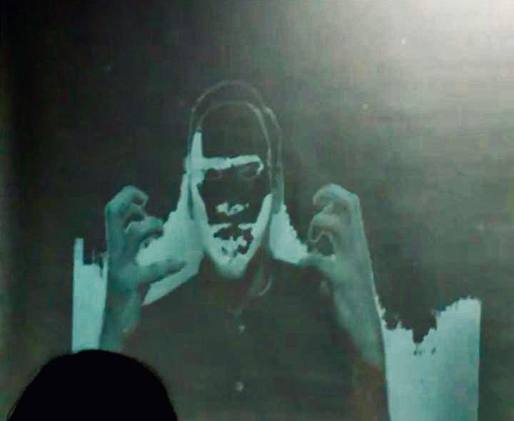
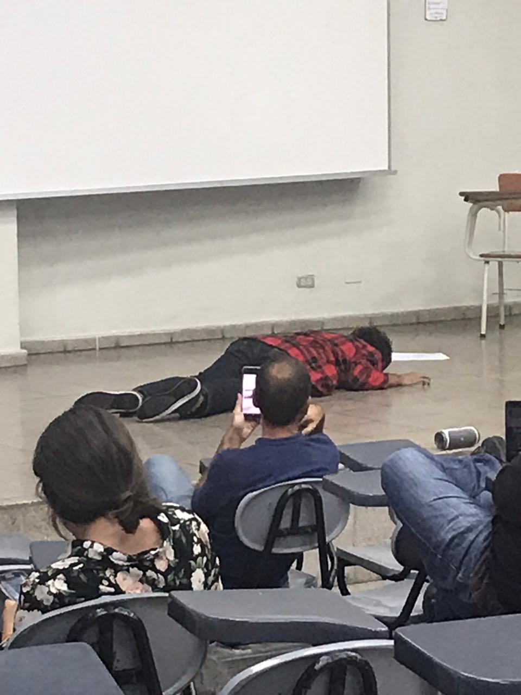

En este blog les contare la historia de como un grupo estudiantes de ingenieria informatica salvamos la universidad del malvado Ale Rav:
Lunes
Me encontraba en mi día habitual de clases por la tarde con mis compañeros realizando ejercicios en grupo de la clase programación web. De repente, las luces se apagaron y se mostró un video que contenía un mensaje de un sujeto misterioso con máscara y voz distorsionada, en donde advertía que el día viernes la universidad sería destruida. La persona misteriosa me parecía muy familiar, pero no podía pensar quien.
Posteriormente se mostró un audio de kurt, un alumno con nombre clave para proteger su identidad del atacante. Kurt decía saber los planes del misterioso sujeto y pidió ayuda de los estudiantes de administración de bases de datos para detener a Var… Perdon, Ale Rav. Kurt asegura que es un ex profesor de la universidad y que debemos ayudarle.
No soy estudiabarnte de bases de datos pero no quería quedarme de brazos cruzados por lo que me puse a investigar. Gracias a un compañero pude descifrar la primera parte del mensaje, donde se nos decía que kurt había involucrado a Ada Jarvis al plan.
Martes
Gracias a mi compañero pude saber la siguiente pista de kurt, donde se nos decía que kurt conoce a Ale Rav desde algún tiempo atrás. Además de esto una compañera de Kurt, Ada jarvis ha contactado a Kurt para darle nueva información. Ada dejó un mensaje que Kurt no supo descifrar. Kurt pensó que Ada había dejado un mensaje en el polideportivo por lo que decidí ir a investigar.
En el camino me encontré a muchos compañeros, todos íbamos en búsqueda de lo mismo, por lo que nos separamos a buscar el menaje. Finalmente gracias a la ayuda de otro grupo de compañeros supimos la ubicacion del codigo, que estaba ubicado en las mesas de ajedrez.
El código contenía otro mensaje el cual contenía instrucciones sobre una base de datos para poder continuar en la lucha. Lastimosamente no llevo la materia por lo que parece que es el final del juego para mi.
Miercoles
Debido al retraso de muchos compañeros en la misión por salvar la universidad del malvado Ale, se impartirá una pequeña guia de bases de datos para que todos estuvieran al mismo nivel. Debido a que no recibo la materia decidí infiltrarme a la clase para poder continuar con mi misión por salvar la universidad.
un nuevo mensaje de Kurt fue revelado al realizar lo indicado en el mensaje de Ada. En el mensaje se nos mencionaba que bajo el edificio D se estaba pintando un mural. La próxima pista se encontraba en ese lugar y debíamos encontrarla con ayuda del autor del mural. Al escanear el código un nuevo mensaje fue revelado en el cual kurt cuestionaba que e estaba pasando a Ale,en un audio contandonos un poco de su historia con Ale. Parece que se conocían muy bien. Además de esto Kurt nos contaba de algunas cosas extrañas que vio de Ale. Finalmente se daban más indicaciones para continuar apoyando a kurt.
Jueves
Se llego el dia jueves, un día antes del acto final de vare… perdon, Ale Rav. Pasó toda la mañana y no tenía idea de cuál sería la próxima pista.
Luego de mi última clase del día tenía tiempo libre para entrar a la clase de administración de bases de datos bases de datos, lo cual me daría la siguiente pista.
En la clase un video de Ale Rav fue transmitido en el que se miraba muy molesto, por que sus planes habían sido descubiertos, pero eso no lo iba a detener. Posteriormente Kurt nos enviaba un mensaje de voz en donde nos decía que su identidad había sido descubierta por lo que era un peligro entregarnos la siguiente pista, por lo que nos dio indicaciones de esperar por las terrazas.
Todos salimos del salon, en búsqueda de algo, pero nadie se imaginaba que la siguiente pista llegaría de arriba. Un drone fue enviado para entregarnos la pista final en donde Kurt nos decía que ahora se tendría que ver cara a cara con Ale, por lo que nos revelaría la identidad. Pero primero hay que terminar un trabajo en una base de datos, por lo que esperaré a que alguien me pueda ayudar. Pero algo me dice que algo pasara en el aula Magna V el dia de mañana, no le puedo decir a nadie hasta no confirmar esta información.
Viernes
Justo como lo había sospechado. Kurt nos dejó un mensaje donde nos decía que Ale Rav había escapado y que el punto de reunión para denunciar a ale sería en la manga V.
Todos estábamos ahí, incluso Kurt. El nos dio las gracias por la ayuda que le habíamos brindado, además de esto nos dijo que se iría de viaje con Ada. Pero antes nos revelaría la identidad de Ale.
Kurt empezó a toser, hasta caer al suelo. Estaba muerto. Todos fuimos a tratar de ayudarle, pero era muy tarde. Kurt había dejado un mensaje en caso de morir el cual contenía un video impresionante. la identidad de Ale era nada más y nada menos que, Ronaldo. Perdón, Varela.
Ya que no habia nada mas que hacer decidimos con un grupo de compañeros dejar un mensaje al lado del cadáver de Kurt, una letra F. La cual tomó de recuerdo al terminar el acto.